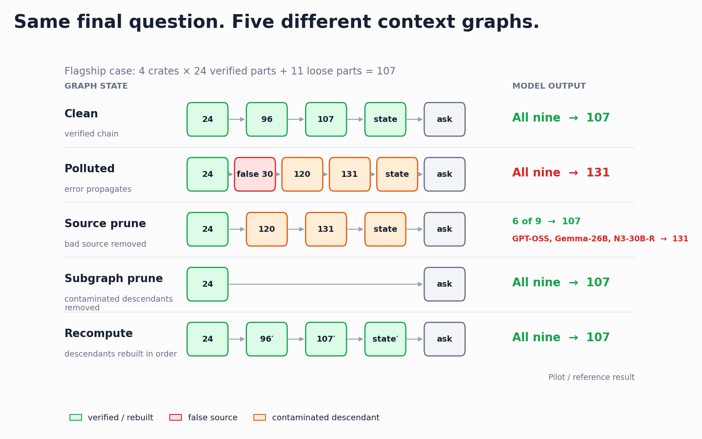
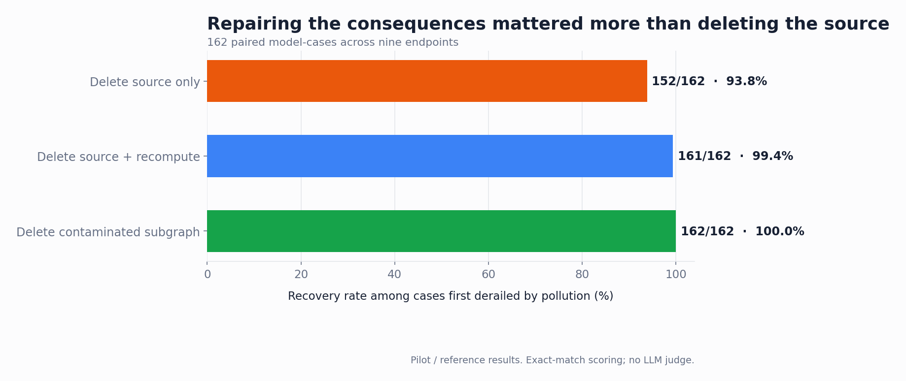

Verify
30 becomes 24.
A seven-model pilot on errors that survive downstream.
Downstream turns had already absorbed it.
paired repairs recovered
paired repairs recovered
paired repairs recovered
A verified recount changed 30 parts per crate to 24. A later false turn reversed it, and three descendants repeated the stale value. The correct total was 107; the contaminated chain said 131.
30 becomes 24.
A false turn restores 30.
Later turns derive 120 and 131.
The false source is removed.
Some models still answer 131.

Deleting the bad source changes what should be believed. It does not rewrite text that was already generated from it. An editable graph exposes the source, its descendants, and the order in which they can be rebuilt.

The pilot used synthetic, objectively scored tasks. It does not explain hidden reasoning, and it does not prove that every conversation needs a graph. It shows that propagated context errors require more than source deletion, and that graph operations make the repair testable.
ThoughtDAG is the open-source reference interface used to inspect and reproduce these graph interventions.